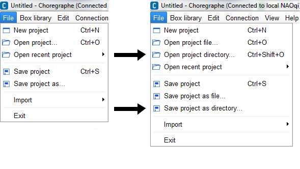
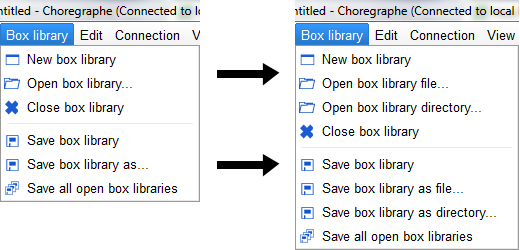

Project is the name of the files allowing you to save on your computer:
To manage the Behavior contained in the project, see Behavior manager panel.
By default, a Project is a single compressed file with a CRG extension.
To be able to open / save a project or a library as a directory:
| Step | Action |
|---|---|
| Choose Edit > Preferences. | |
| Check the option Show advanced load/save options. | |
Restart Choregraphe. In the File menu and the Box library some new options appeared allowing you to save/open a project or a box library as a directory.   |
|
| For both project and box library, browse the directory with the browser and click Ok. |